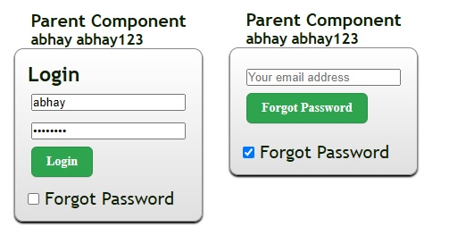
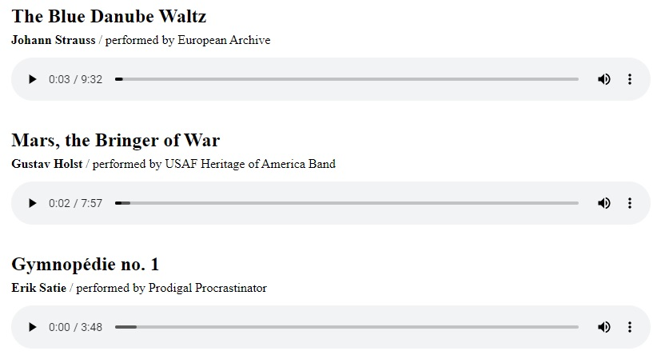

- 
-
-
svelte:context
In all the examples we've seen so far, the <script> block contains code that runs when each component instance is initialised. For the vast majority of components, that's all you'll ever need.
Very occasionally, you'll need to run some code outside of an individual component instance. For example, you can play all five of these audio players simultaneously; it would be better if playing one stopped all the others.
We can do that by declaring a <script context="module"> block. Code contained inside it will run once, when the module first evaluates, rather than when a component is instantiated. Place this at the top of AudioPlayer.svelte
SvelteContext.svelte
<script lang="ts">
import AudioPlayer from "./AudioPlayer.svelte";
</script>
<div>
<!-- https://musopen.org/music/9862-the-blue-danube-op-314/ -->
<AudioPlayer src="https://sveltejs.github.io/assets/music/strauss.mp3" title="The Blue Danube Waltz" composer="Johann Strauss" performer="European Archive" />
<!-- https://musopen.org/music/43775-the-planets-op-32/ -->
<AudioPlayer
src="https://sveltejs.github.io/assets/music/holst.mp3"
title="Mars, the Bringer of War"
composer="Gustav Holst"
performer="USAF Heritage of America Band"
/>
<!-- https://musopen.org/music/8010-3-gymnopedies/ -->
<AudioPlayer src="https://sveltejs.github.io/assets/music/satie.mp3" title="Gymnopédie no. 1" composer="Erik Satie" performer="Prodigal Procrastinator" />
</div>AudioPlayer.svelte
<script lang="ts" context="module">
let current: HTMLAudioElement;
</script>
<script lang="ts">
export let src: string;
export let title: string;
export let composer: string;
export let performer: string;
let audio: HTMLAudioElement;
let paused = true;
function stopOthers() {
if (current && current !== audio) current.pause();
current = audio;
}
</script>
<article class:playing={!paused}>
<h2>{title}</h2>
<p><strong>{composer}</strong> / performed by {performer}</p>
<audio bind:this={audio} bind:paused on:play={stopOthers} controls {src} />
</article>
<style>
article {
margin: 0 0 1em 0;
max-width: 800px;
}
h2,
p {
margin: 0 0 0.3em 0;
}
audio {
width: 100%;
margin: 0.5em 0 1em 0;
}
.playing {
color: #ff3e00;
}
</style>It's now possible for the components to 'talk' to each other without any state management
svelte:context export
Anything exported from a context="module" script block becomes an export from the module itself.
SvelteContextExport.svelte
<script lang="ts">
import AudioPlayer, { stopAll } from "./AudioPlayer.svelte";
</script>
<button on:click={stopAll}> stop all audio </button>
<div>
<!-- https://musopen.org/music/9862-the-blue-danube-op-314/ -->
<AudioPlayer src="https://sveltejs.github.io/assets/music/strauss.mp3" title="The Blue Danube Waltz" composer="Johann Strauss" performer="European Archive" />
<!-- https://musopen.org/music/43775-the-planets-op-32/ -->
<AudioPlayer
src="https://sveltejs.github.io/assets/music/holst.mp3"
title="Mars, the Bringer of War"
composer="Gustav Holst"
performer="USAF Heritage of America Band"
/>
<!-- https://musopen.org/music/8010-3-gymnopedies/ -->
<AudioPlayer src="https://sveltejs.github.io/assets/music/satie.mp3" title="Gymnopédie no. 1" composer="Erik Satie" performer="Prodigal Procrastinator" />
</div>AudioPlayer.svelte
<script lang="ts" context="module">
const elements = new Set();
export function stopAll() {
elements.forEach((element: HTMLAudioElement) => {
element.pause();
});
}
</script>
<script lang="ts">
import { onMount } from "svelte";
export let src: string;
export let title: string;
export let composer: string;
export let performer: string;
let audio: HTMLAudioElement;
let paused = true;
onMount(() => {
elements.add(audio);
return () => elements.delete(audio);
});
function stopOthers() {
elements.forEach((element: HTMLAudioElement) => {
if (element !== audio) element.pause();
});
}
</script>
<article class:playing={!paused}>
<h2>{title}</h2>
<p><strong>{composer}</strong> / performed by {performer}</p>
<audio
bind:this={audio}
bind:paused
on:play={stopOthers}
controls
{src}
></audio>
</article>
<style>
article {
margin: 0 0 1em 0; max-width: 800px;
}
h2, p {
margin: 0 0 0.3em 0;
}
audio {
width: 100%; margin: 0.5em 0 1em 0;
}
.playing {
color: #ff3e00;
}
</style>